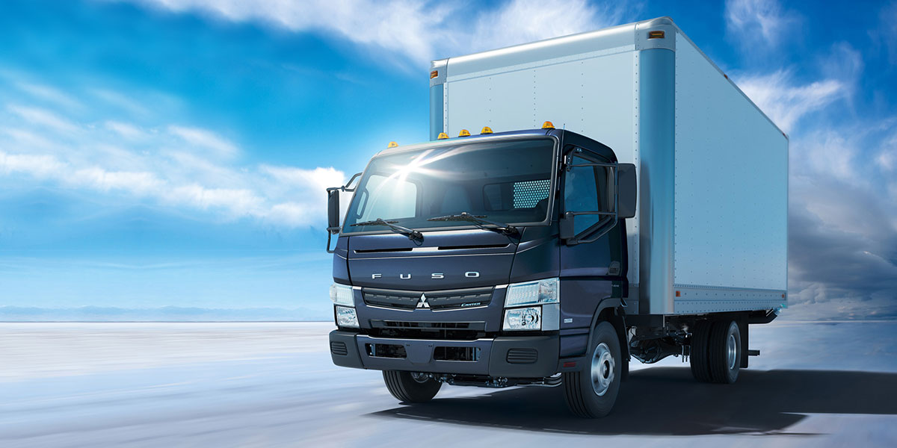
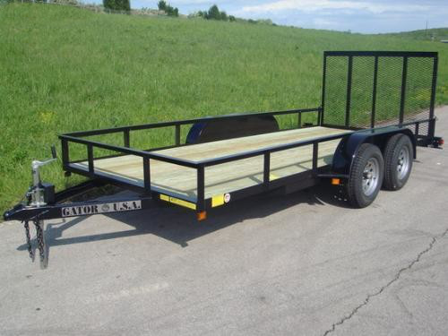
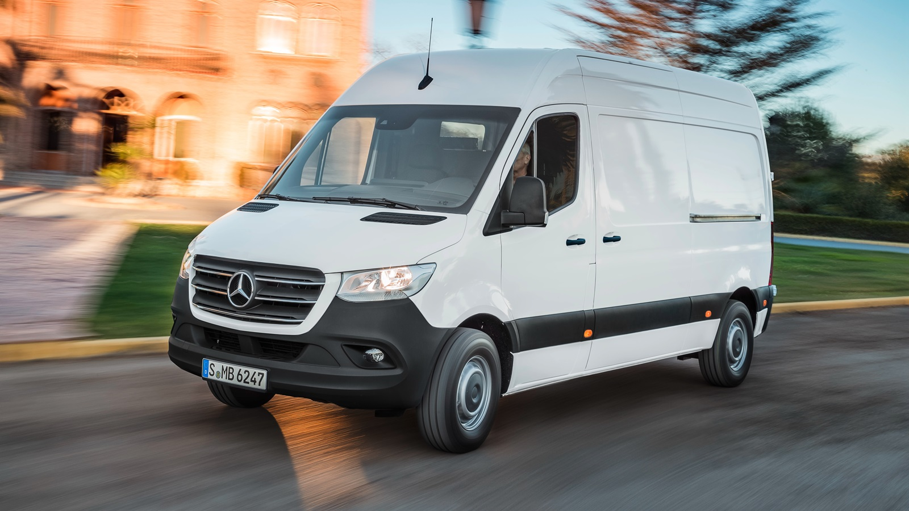

Los tipos de vehículos utilizados en el transporte terrestre de carga varían en función de la cantidad, peso y tipo de mercancías que se deben transportar, así como de la distancia y el terreno por el que se realizará el traslado. A continuación, se presentan los tipos de vehículos más comunes:
- Camiones: son el medio de transporte terrestre más común para el transporte de carga. Existen diversos tipos, como camiones de carga general, camiones cisterna, camiones frigoríficos y camiones de plataforma plana. Cada uno se adapta a diferentes necesidades de transporte. 
- Remolques: son vehículos sin motor que se enganchan a un camión y se utilizan para transportar grandes cargas o para transportar contenedores. 
- Furgonetas: son ideales para el transporte de mercancías pequeñas o medianas y se utilizan a menudo para la distribución urbana. 
-
Trenes: los trenes de carga son una opción
muy eficiente para transportar grandes volúmenes de
mercancías, como carbón, petróleo y productos químicos.

También es importante tener en cuenta la infraestructura disponible en las carreteras y en las vías férreas, así como las regulaciones y restricciones de transporte en cada país o región. En general, es importante considerar una variedad de factores para seleccionar el tipo de vehículo de transporte terrestre de carga más adecuado para cada situación de envío.